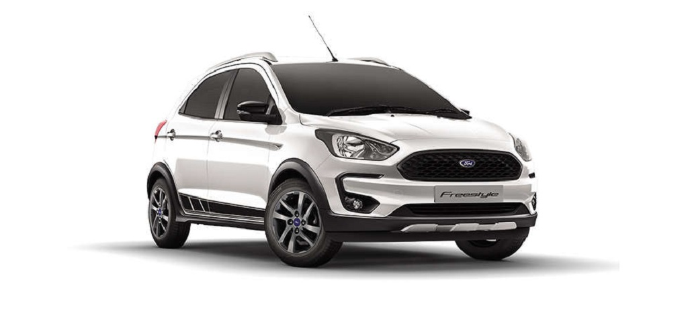
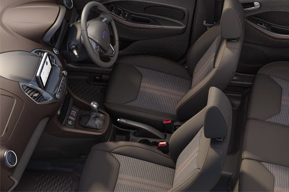
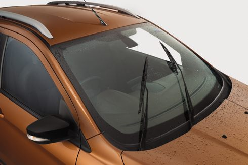
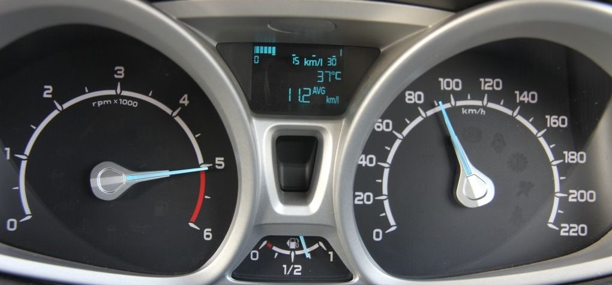

FORD FREESTYLE
India’s First Compact Utility Vehicle (CUV) from Ford is here. Its SUV-like robust design, powerful engine and versatile features are made to compliment your freestyle spirit. So freely take those chances, go where your heart takes you and live each day with no regrets..
REVIEW
Ford is betting big on SUVs and crossovers, not just at the global market but in India too. It has already tasted success with the EcoSport and the Endeavour and well, here is its third contender. It’s a crossover called the Freestyle and as the name suggests, it’s a SUVized (If that’s a term) model added in to expand the range of Ford’s entry-level models.
Ground clearance has increased by 16mm over the Figo to 190mm and it also features a 30mm wider track to help it better grip the road and give the taller hatchback more stability. Ford have also beefed up the suspension and anti roll bars, further adding stability and resisting the roll that is common after the ride height of a car is increased, but more on this later.
Ground clearance has increased by 16mm over the Figo to 190mm and it also features a 30mm wider track to help it better grip the road and give the taller hatchback more stability. Ford have also beefed up the suspension and anti roll bars, further adding stability and resisting the roll that is common after the ride height of a car is increased, but more on this later.

Featuring a striking-look, a commanding stance and dynamic design, the All-New Freestyle exudes confidence. Ford’s signature trapezoidal grille, in an aggressive all-black honeycomb design and sweeping straight lines moving from front to the rear, give the All-New Freestyle robust, muscular, SUV-like looks. Always making a strong statement wherever it goes.
The Freestyle debuts an updated design language that will also be used for the updated versions of the Figo and Aspire. The most noticeable aspect on the face is the blacked out version of the American automaker’s signature trapezoid grille. There’s a mere suggestion of the Fiesta when you look at the car headlamps which is nice considering that the current Fiesta (hatch and sedan) is quite a looker.
While the front and sides are filled with multiple design cues, the rear seems to be a in a different zone. The badging and shapes are minimalistic and the most prominent element appears to be the bumper. It’s chunky and adds some life to what is otherwise a very plain section.
The Freestyle debuts an updated design language that will also be used for the updated versions of the Figo and Aspire. The most noticeable aspect on the face is the blacked out version of the American automaker’s signature trapezoid grille. There’s a mere suggestion of the Fiesta when you look at the car headlamps which is nice considering that the current Fiesta (hatch and sedan) is quite a looker.
While the front and sides are filled with multiple design cues, the rear seems to be a in a different zone. The badging and shapes are minimalistic and the most prominent element appears to be the bumper. It’s chunky and adds some life to what is otherwise a very plain section.

Despite being a three-cylinder and sounding quite thrummy when idling, it is a fun engine to play with. At the lower end you get access to the 120Nm of torque pretty easily and this means that you would not tire out working the clutch and gearbox in heavy traffic or in city driving speeds. This ability to offer such an easy driving experience is no doubt helped by the new gearbox which has smooth throws, light clutch action and a large chunk of its ability in the mid-range.
The other end of the spectrum is not too shabby either and out on the highway, you can get up to three-digit speeds without much effort and cruise comfortably. However, go in for a quick overtake and you will need feel the small capacity of the engine and will need to shift down to gain some more momentum.
The other end of the spectrum is not too shabby either and out on the highway, you can get up to three-digit speeds without much effort and cruise comfortably. However, go in for a quick overtake and you will need feel the small capacity of the engine and will need to shift down to gain some more momentum.

Step into the cabin of the Freestyle and you greeted by familiar but a two-toned space of black and chocolate brown across the cabin. The space within looks quite familiar as much of the design has been carried over from the current Figo and Aspire. The instrument cluster, dashboard and even the air con vents all carry the familiar Ford family look but now in a brown and black colour scheme. The quality is acceptable considering that this vehicle will be priced lower than the compact SUVs.
The rear seats have never been a strong point for Figo and it’s not really quite different here. The headroom is cramped thanks to the sloping roofline and even on this top-of-the-line Titanium+ model you do not get an arm rest, 12V outlet, rear vents and door pockets. The only standard useable space being a bottle holder between the front seats.

The great ground clearance of the Freestyle keeps it safe over bad roads and even the most stupidly shaped speed bumps, ensuring that you should never scrape its underside, even fully loaded. Any increase in ride height increases body roll through corners. But even through fast corners the Freestyle remains controlled and stable. Ford has achieved this by increasing the track, stiffening the suspension and the anti roll bars.
Ford Freestyle can take quite a beating without too much being transferred to the occupants of the car. It easily absorbs the smaller bumps you would encounter over uneven roads but some of the sharper bumps from level changes and potholes will filter through. The top two variants, the Titanium and Titanium +, feature neat 8-spoke gunmetal alloy wheels shod with 185/60 R15 tyres while the Ambiente and Trend will be sold with steel rims with tyres of the same size.
Ford Freestyle can take quite a beating without too much being transferred to the occupants of the car. It easily absorbs the smaller bumps you would encounter over uneven roads but some of the sharper bumps from level changes and potholes will filter through. The top two variants, the Titanium and Titanium +, feature neat 8-spoke gunmetal alloy wheels shod with 185/60 R15 tyres while the Ambiente and Trend will be sold with steel rims with tyres of the same size.

The new 6.5-inch touchscreen champions the tech package in the new Freestyle. The SYNC3 interface is simple to understand and easy to use and the touch response is quite snappy as well. It also features Android Auto and Apple CarPlay and Ford has even added an additional USB socket that allows you to charge another device while one device is connected to the infotainment system.
Other features include an updated driver’s information display, auto dimming rear view mirror, automatic headlamps and rain-sensing wipers. On the safety front the Freestyle features dual airbags and ABS across the range while the Titanium 1+ variant receives side and curtain airbags as well. There’s also traction control, electronic stability control, hill launch assist and even an active roll over prevention system.
Other features include an updated driver’s information display, auto dimming rear view mirror, automatic headlamps and rain-sensing wipers. On the safety front the Freestyle features dual airbags and ABS across the range while the Titanium 1+ variant receives side and curtain airbags as well. There’s also traction control, electronic stability control, hill launch assist and even an active roll over prevention system.

Fuel economy scores for the 2018 Ford Freestyle aren’t yet available from federal regulators. As a result, we can’t yet assign a score on our rating system.
All petrol and diesel levels of the Freestyle use a 1.2 and 1.5 litre manual speed to make the most from every drop of gasoline providing fuel economiy of 19kmpl and 24.4kmpl respectively which is a good score for a vehicle in this range.Ford has provided a better option for adventure seekers starting from just 5.09 lakhs.
All petrol and diesel levels of the Freestyle use a 1.2 and 1.5 litre manual speed to make the most from every drop of gasoline providing fuel economiy of 19kmpl and 24.4kmpl respectively which is a good score for a vehicle in this range.Ford has provided a better option for adventure seekers starting from just 5.09 lakhs.
